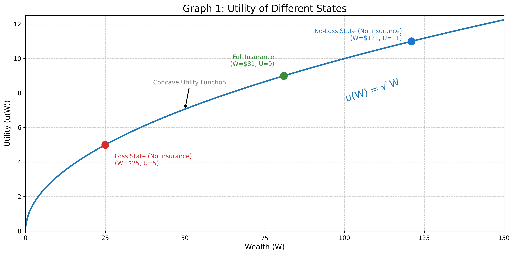
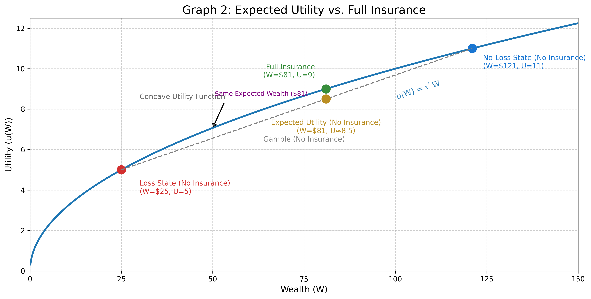
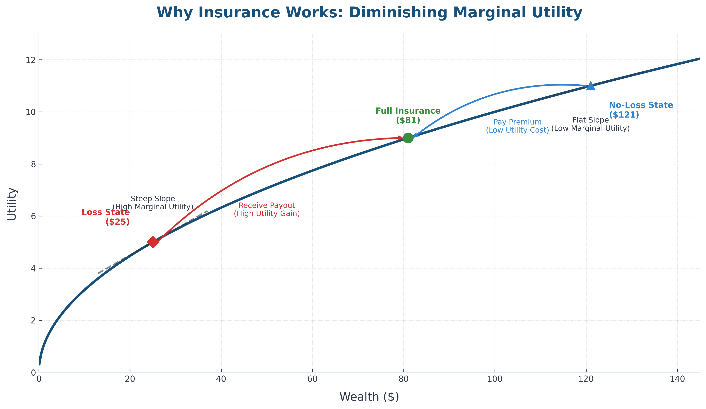

Module 1 / Lesson 2.4
Risk Preferences and Expected Utility
Learning guide
- Learning: Read the lesson to grasp concepts on risk preference and utility.
- Reflection: As you read it, think how the principle of Diminishing Marginal Utility provides an economic justification for a progressive income tax system (where people with higher incomes pay a higher percentage of tax). Specifically, how does taking an extra $1,000 from a poor person compare in terms of utility loss to taking $1,000 from a very wealthy person?
Example: It is a hot day and you have been out for a race. By the end of the race, you are very thirsty. There is a table full of small cups of water for race participants like you to drink, and you are free to drink as many as you like. How much satisfaction to you gain by drinking the first cup of water? The second? The fifth? How many little cups of water do you expect to drink? Why stop at that number?
Click to Reveal Answer
The first cup of water will bring you a lot of additional satisfaction or utility because you are very thirst. As you drink more and more water, your thirst abates and you become less thirsty. Each additional cup of water brings less satisfaction or utility than the one before it, since you are much less thirsty after a few cups of water, and not thirsty at all after 5 (or more??) cups. At some point, you aren't thirsty at all and you choose to stop drinking cups of water. This is called Diminishing Marginal Utility: The additional satisfaction or utility gained from drinking the cup of water (the marginal utility of the first cup of water) is far greater than for the fifth cup. We will see in a moment that this idea of diminishing marginal utility might apply to wealth generally as well as to cups of water after a race.
Risk Preferences
People feel differently about uncertain outcomes. We classify these preferences into three types:
1. Risk Averse
Dislikes risk. Prefers a certain outcome (e.g., $50) over a gamble with the same expected value. Most people are risk-averse regarding significant losses.
2. Risk Neutral
Indifferent to risk. Only cares about expected wealth, not the uncertainty. Is indifferent between a certain $50 and an uncertain outcome yielding $50 on average.
3. Risk Seeking
Prefers the gamble over the certain outcome. They actively like more uncertainty (for the same expected wealth). Prefers an uncertain outcome yielding $50 on average to a certain $50.
The Concept of Utility
Utility is a measure of satisfaction or "happiness" derived from wealth or what you consumer. A utility function that depends on wealth is a curve that assigns a happiness number to every level of wealth.
Example Utility Function
We often use the square root function to model risk aversion:
This function has a steep slope for low wealth levels but a flatter slope for higher wealth levels. This shape creates Diminishing Marginal Utility:
- When Poor ($0): Getting $1 (wealth going from $0 to $1) adds 1 unit of utility (utility going from sqrt(0)=0 to , sqrt(1)-sqrt(0)=1).
- When Rich ($100): Getting $1 (wealth going from $100 to $101) adds only 0.05 units of utility (utility going from sqrt100 to sqrt101,).
Connecting the Numbers to the Graph
Recall our example from Lesson 2.1: You have an initial wealth of $121 and a potential loss of $96, so a wealth of either $121 (No-Loss) or $25 (Loss). Imagine that the probability of loss is 40/96 (41.66666%). In this case, the actuarially fair premium (that you learned in Lesson 2.3) for full insurance paying the full $96 loss will be $40 (I=L=$96, p=40/96, so actuarially fair premium = p*I=$96*40/96=$40).
- Red Dot (Loss State):
Wealth = $25. Utility = .
(Low Happiness) - Blue Dot (No-Loss State):
Wealth = $121. Utility = .
(High Happiness) - Green Dot (Full Insurance):
You pay $40 premium. Wealth = $121-$40=$81 for sure. Utility = .

The Decision: Expected Utility (EU)
We can use the idea of expected utility (E[U]) to represent a person's attitude towards risk. In particular, imagine a person with a utility function of the type described above, where every wealth level is assigned a utility value. We could think of a possible goal, for which a person could have to make choices, that give them the highest utility on average (highest expected utility), given that they have to make choices before they find out what will happen.
Let's see how this might work by comparing two possible choices a person might select: Gamble (No Insurance) vs. Certainty (Full Insurance). Consider the example from above and in Lesson 2.3, where you have a wealth of either $121 (No-Loss) or $25 (Loss), and full insurance is available for a premium of $40. Now imagine further as we did in Lesson 2.3 that the probability of the loss is 40/96 (41.6666%). In this case, we can figure out the person's utility in all possible situations, and ask what their utility will be on average if they make different decisions (e.g., choose insurance or no insurance).
1. The Gamble (No Insurance)
You have a 40/96 (41.666...%) chance of the Red Dot (Wealth=$25 and therefore Utility=sqrt(25)=5) and a 56/96 (58.3333...%) chance of the Blue Dot (Wealth=$121 and therefore Utility=sqrt(121)=11). To calculate utility on average -- expected utility -- you merely calculate a weighted average of the two outcomes (5 and 11) weighted by their probabilities (p=40/96 and 1-p=56/96). This is just using the formula for expected value from Lesson 2.3 but applying it to utility values instead of wealth values. In this case, the expected utility associated with buying no insurance is
Expected Wealth = E[W] = (40/96 * $25) + (56/96 * $121) = $81
Expected Utility = E[U] =
On Graph 2 below, this is the Yellow Dot. Note that it sits on the straight line chord, below the curve. The yellow dot represents the decision to take the gamble, not knowing if you will suffer the loss (and land on the red dot) or not suffer the loss (and land on the blue dot). Your expected wealth and expected utility (not knowing if you will land on the red or blue dots) is just a weighted average of your wealth (or utility) in the good and bad states weighted by their probabilities. It shows how much wealth you will have on average on the x-axis and how much utility you will have on average on the y-axis.
2. The Certainty (Full Insurance)
You pay the fair premium ($40) and have $81 for sure.
Wealth = $121 - $40 = $81
Utility =
This is the Green Dot.
The Result: You should make the choice that gives the highest expected utility. Since 9 (utility of buying insurance) > 8.5 (utility of not buying insurance), you choose to buy insurance because that yields a higher expected utility. Even though the expected dollars ($81) associated with the two options are the same, the expected utility is higher with insurance. This is depicted in the graphic below.

Why Insurance Works: Marginal Utility
Insurance (at an actuarially fair price, increasing certainty while leaving expected wealth unchanged) increases expected utility for risk-averse person because of the slope of their utility curve. Recall from above that a risk-averse utility function like square root is steep for low wealth levels but flatter for higher wealth levels. This means getting an extra $1 of wealth adds more utility when you are poor than when you are rich. Recall from Lesson 2.2 that insurance has the effect of lowering wealth in the no-loss state when you are otherwise richer (since you pay the insurance premium but get nothing back) but increases wealth in the loss state when you are otherwise poorer (since you receive a payment from your insurer that exceeds what you pay in premiums). Insurance transfers wealth from good states (when extra money is relatively less useful because the slope of the utility function is flatter) to bad states (when extra money is relatively more useful because the slope of the utility function is steeper).
- In the Good State (Blue Dot): You are wealthy ($121). The curve is flat. Giving up $40 buy to buy insurance moving you from the blue dot to the green dot reduces utility very little.
- In the Bad State (Red Dot): You are poor ($25). The curve is steep. Getting $56 ($96-$40) from the insurer because you bought insurance moving you from the red dot to the green dot increases utility a lot.
Key Idea: Insurance (for a risk-averse person at an actuarially fair price) is valuable (increases expected utility) because it causes the purchaser to giving up money in the no-loss state when money is less useful (moving down slightly from the blue dot to the green dot) to receive money in the loss state when money is more useful (moving up a lot from the red dot to the green dot). This causes utility to go up on average because utility goes down a little bit in the no-loss state but goes up a lot in the loss state, so that on average utility goes up even if expected wealth is unchanged.
